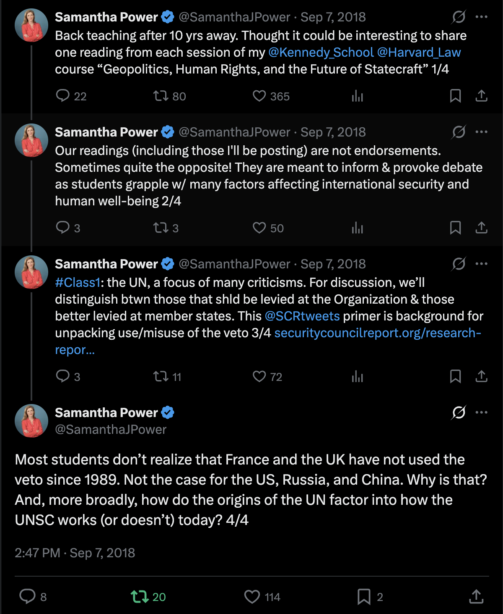
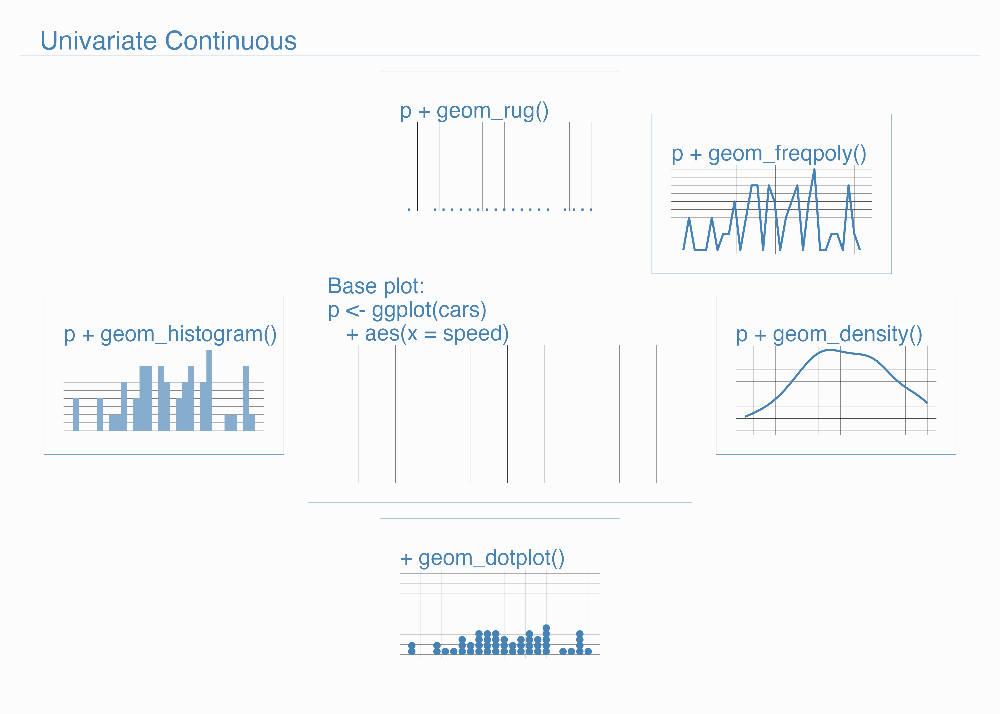
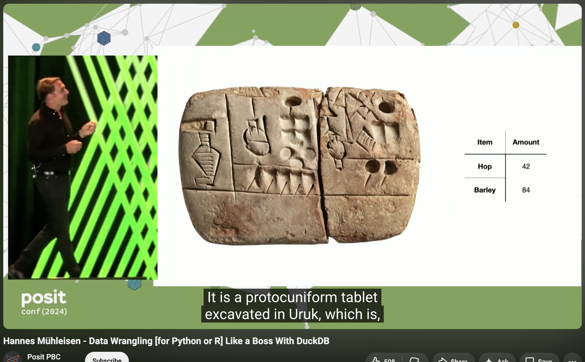
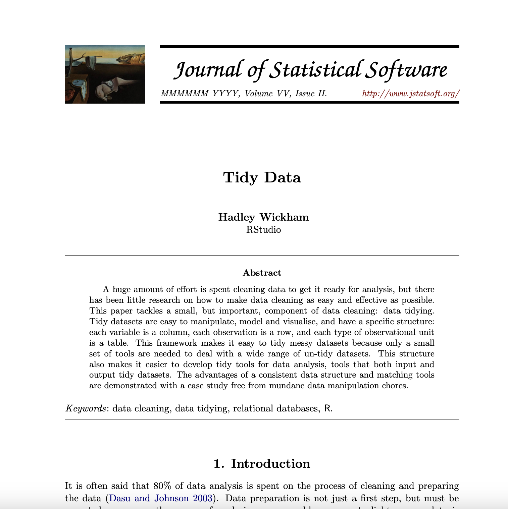
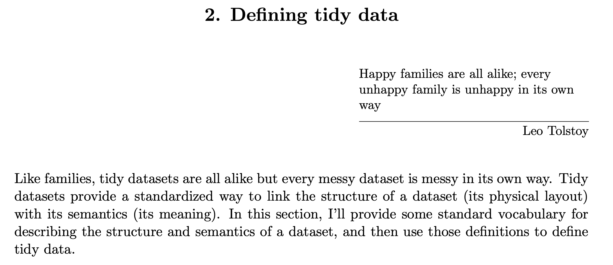
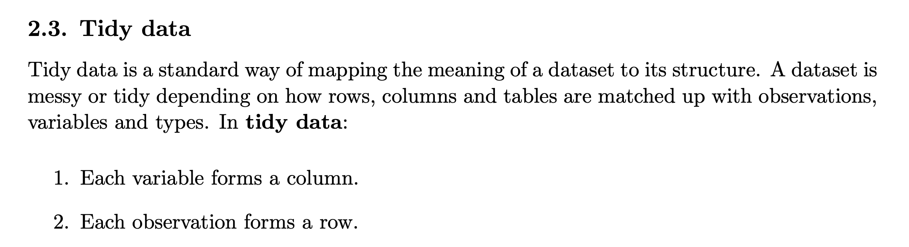
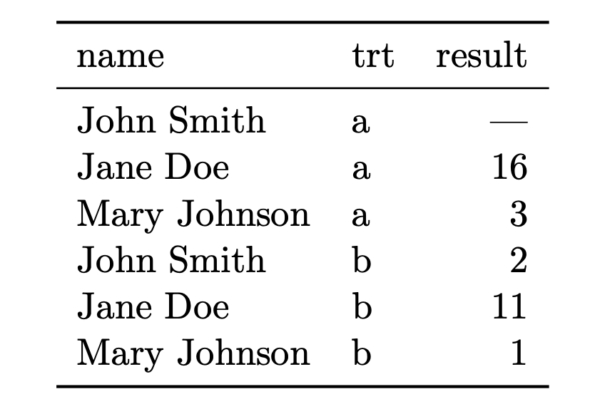
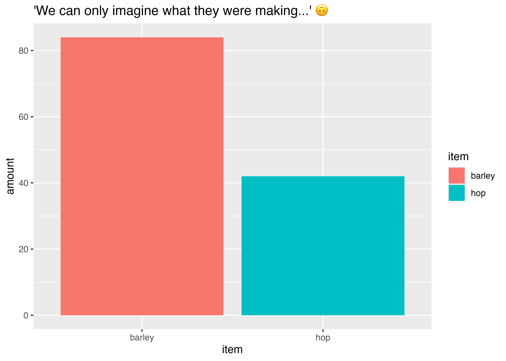
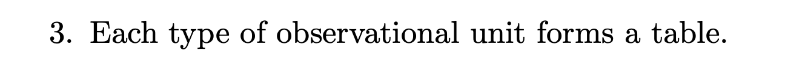
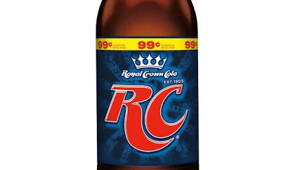

library(tidyverse)
library(gapminder)
#
gapminder <- gapminder |>
mutate(life_exp_cats =
case_when(lifeExp >= 70 ~ "Long Life Expectancy",
lifeExp < 70 & lifeExp >= 50 ~ "Medium Life Expectancy",
lifeExp < 50 ~ "Short Life Expectancy"),
income_cat =
case_when(gdpPercap >= 30000 ~ "High Income",
gdpPercap < 3000 & lifeExp >= 10000 ~ "Medium Inncome",
gdpPercap < 1000 ~ "Low Income"))
### data subsets
gap_2002 <- gapminder |>
filter(year == 2002)
gap_americas <- gapminder |>
filter(continent == "Americas")
# univariate continuous
# bivariate, 2 continuous
# multi seriestables and data wrangling
Assignment: Who is Samantha Power?
Task 1. Samantha Power asks: ‘Most students don’t realize that France and the UK have not used the veto since 1989. Not the case for the US, Russia, and China. Why is that?’ Who is she such that she might find this question especially interesting?

Task 2. Name two or three area of international relations (is it also security council politics?) that interests you, broadly speaking? Foreign aid? International conflict? Security Council Voting? Foreign direct Investment?
Task 3. If we try to frame the question as a research question we might say there is an ‘outcome to be explained’ (or variation in the world to explain): France and UK are not using veto where as China, US, and Russia do. The variation is binary, does-doesn’t, type variation. In your areas of interest, is there some variation in the world that we can observe? Amount of foreign aid? Aid flows? Votes on the council? Investment flows?
Task 3. There are several explanations for the variation that Power’s notices:
relative difference in material capabilities/power of the permanent members.
change in the relative salience of issues voted upon in the Security Council.
strong relationships between France and UK with non permanent members
something else?
… What are some of the possible explanations for the variation that you are interested in?
Examples:
Amount of foreign aid <- Need
Amount of foreign aid <- placating behavior?
wrapping up … ‘layers’ in ggplot2
Create a plot with assignments:
geom_line()geom_histogram()geom_rug()geom_density_2d()geom_dotplot()
Again Take one of the assigned ‘geoms’ from the cheat sheet or grammar guide we haven’t already used, and create a plot and be prepared to describe it:
- geom_boxplot
- geom_violin
- geom_jitter
- geom_count
- geom_bin2d
library(ggplot2)
library(gapminder)
### data subset
gap_2002 <- gapminder |>
filter(year == 2002)
# bivariate, continuous X discrete
# bivariate, discrete X discrete
# bivariate, continuous X continuousggplot2 cheat sheet -> language school classroom posters?

New agenda item: tables, and data manipulation (‘wrangling’)…
data cleaning, wrangling, tidydata
Wrangle. “From Middle English wranglen, from Low German wrangeln (“to wrangle”), frequentative form of Low German wrangen (“to struggle, make an uproar”) and German rangeln (“to wrestle”).”
“He who has a why to live can bear almost any how.” – Friedrich Nietzsche
https://www.youtube.com/watch?v=GELhdezYmP0

library(tidyverse)“Tidy Data”

Analyst frustration:



Within columns, information is ‘like-in-kind’
–
like in kind?
All numerics, all Strings, all factors (categories), all logical (TRUE/FALSE), all ordered factors (categories with an order).
Also, no rows with summaries - ‘raw’ table
Observational unit?
library(tidyverse)
uruk_3200bc <- tribble(~item, ~amount,
"hop", 42,
"barley", 84)
uruk_3200bc# A tibble: 2 × 2
item amount
<chr> <dbl>
1 hop 42
2 barley 84uruk_3200bc |>
ggplot() +
aes(x = item,
y = amount,
fill = item) +
geom_col() +
labs(title = "'We can only imagine what they were making...' 🙃")
is the gapminder data tidy?
library(gapminder)
gapminder# A tibble: 1,704 × 8
country continent year lifeExp pop gdpPercap life_exp_cats income_cat
<fct> <fct> <int> <dbl> <int> <dbl> <chr> <chr>
1 Afghanistan Asia 1952 28.8 8.43e6 779. Short Life E… Low Income
2 Afghanistan Asia 1957 30.3 9.24e6 821. Short Life E… Low Income
3 Afghanistan Asia 1962 32.0 1.03e7 853. Short Life E… Low Income
4 Afghanistan Asia 1967 34.0 1.15e7 836. Short Life E… Low Income
5 Afghanistan Asia 1972 36.1 1.31e7 740. Short Life E… Low Income
6 Afghanistan Asia 1977 38.4 1.49e7 786. Short Life E… Low Income
7 Afghanistan Asia 1982 39.9 1.29e7 978. Short Life E… Low Income
8 Afghanistan Asia 1987 40.8 1.39e7 852. Short Life E… Low Income
9 Afghanistan Asia 1992 41.7 1.63e7 649. Short Life E… Low Income
10 Afghanistan Asia 1997 41.8 2.22e7 635. Short Life E… Low Income
# ℹ 1,694 more rows
Wrangling exploration…
In class…

Full data set, for reference
library(gapminder)
gapminder# A tibble: 1,704 × 8
country continent year lifeExp pop gdpPercap life_exp_cats income_cat
<fct> <fct> <int> <dbl> <int> <dbl> <chr> <chr>
1 Afghanistan Asia 1952 28.8 8.43e6 779. Short Life E… Low Income
2 Afghanistan Asia 1957 30.3 9.24e6 821. Short Life E… Low Income
3 Afghanistan Asia 1962 32.0 1.03e7 853. Short Life E… Low Income
4 Afghanistan Asia 1967 34.0 1.15e7 836. Short Life E… Low Income
5 Afghanistan Asia 1972 36.1 1.31e7 740. Short Life E… Low Income
6 Afghanistan Asia 1977 38.4 1.49e7 786. Short Life E… Low Income
7 Afghanistan Asia 1982 39.9 1.29e7 978. Short Life E… Low Income
8 Afghanistan Asia 1987 40.8 1.39e7 852. Short Life E… Low Income
9 Afghanistan Asia 1992 41.7 1.63e7 649. Short Life E… Low Income
10 Afghanistan Asia 1997 41.8 2.22e7 635. Short Life E… Low Income
# ℹ 1,694 more rows| function | action |
|---|---|
| filter() | keep rows (if true) |
| select() | keep variables (or drop them -var) |
| mutate() | create a new variable |
| distinct() | keep unique |
| case_when() | is used for “recoding” variable, often used with mutate() |
| rename() | renaming variables |
| arrange() | order rows based on a variable |
| slice() | *keep or drop rows based on row number |